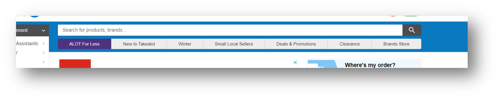

Takealot officially launched in June 2011(Takealot Online 2024) and currently has built a successful reputation and company as most South Africans are aware of. Whether it be through personal experience of purchasing an item on the platform or shared knowledge from customer experiences. It became more relevant to millions during the pandemic as online retail stores saw a rise in becoming a necessity for the purchase of goods. Today, takealot.com is the leading ecommerce retailer in the country and one of the largest, most innovative companies in the retail industry on the whole continent (Takealot Online, 2024). The purpose of this essay is to create an analysis of the UX and UI design for the selected ecommerce website - Takealot.com. Its high usage serves as a worthy website to observe regarding its user interface and user experience as it would be expected that it is user friendly. Is that the reason why people keep coming back for more? Are there areas in which the website lacks usability? According to Bush (1945) there is an increase in complexity and sophistication of technology. Therefore, throughout the essay we will dive into these aspects in depth outlining modern UI and UX design in today’s digital landscape.
User experience (UX) deals with the user behavior and feeling when using a website or app (Matt Ellis 2018). It refers to the meaningful experiences when users interact with a product or service. The process of design the UX involves different aspects of product development such as branding, function, usability, and the overall design. It helps to view it as a journey that the user experiences during an interaction of a product or service by asking questions about how the user is introduced to it. Whether it is through an advertisement, a blog, an app, and other possible platforms. Other questions to consider is what kind of experience the user has and taking note of how they feel after the interaction. The goal is to leave the user feeling fulfilled throughout a positive engagement during each interaction, whether it is to get a solution for a problem, helping the user find critical information, providing entertainment and many other factors (Columbia Engineering 2024). User interface (UI) is a specialization that focuses on the controls that people use to interact with a website or app. This design process may include controls such as button displays, gestures, widgets, text, sliders, images, and other interactive elements. These controls must be responsive, and the interface should be simple enough for an instantaneous experience in interactivity (Ellis 2018).

When analyzing user experience at first, we can look at how we got to the website in the first place. It is easily accessible when searching for the website on google making the user find it with ease. The title and description clearly explain the purpose of using Takealot as it states that, “You can shop anything you want” and that it is “SA’s online leading store”. It highlights some of the main categories that the user may explore such as the daily deals, promos, vouchers, and exclusives. It promotes itself with high regard making it appear trustworthy for a customer. By the right side of the screen, sponsored ads are being promoted which gives a first glance of what kind of products are available on Takealot. It might be an opportunity for a customer to see what they are looking for and if it is found then it is easy to click on the specific product which directs you to the product on the website and they may choose to make a purchase right away. The same applies if the user searches for a specific product on google, the image of the product sold at Takealot will be displayed immediately. Although this analysis is not based on google, it is important to note that customers find products with ease which forms their user experience and that Takealot does a remarkable job at making its platform easily accessible for customers when searching for it, whilst promoting sponsored products that may be of interest and that encourages interaction.
On the first page of the website, the user is greeted with a large slideshow showcasing looped advertisements which is the first thing the user will see. This indicates that their advertisements are top priority in drawing customers in as flash sales, brands, special deals and programs are being promoted on this section. The advertisements continue by the right-side panel as you scroll down introducing the user to popular brands available on the platform and the sales or programs being promoted. This enables the user to click on an individual advert that is being shown on the fast-paced looped slideshow in case they missed it or did not catch it on time, and adding this to the user interface aids in making it a useful experience for the customer whilst giving the website more visual appeal.

When focusing back to the main front page, the Takealot logo is by the left corner of the page and is clearly visible. It is noticeable that their signature color is blue as seen on their logo, header, and footer. The blue is used for all the button interactions and their sale icons above products. The use of the same color shows their brand consistency. There is a psychological impact of color on human emotions and behavior as they elicit specific feelings and influence how people respond. Blue is associated with trust and calmness and often used in UI design to promote a sense of reliability and serenity. Financial and healthcare institutions may use this color in their UI to convey a sense of professionalism and security (Thang 2023). Therefore, Takealot may have blue as their main color because millions of people use their platform, and it needs to be presented in a professional manner so that customers trust their company enough to make financial transactions with them.
The search UI is a framework that incorporates world class search experiences, and it is one of the most important aspects that influences user experience when visiting a website. It is a powerful system that connects users to their needs. It helps users stay engaged and find what they may be looking for. They may even discover more than they had intended (Kochummen 2023). Takealot has their search UI at the top of the page, encouraging users to see it clearly and use it as they need. It is a common action to search on Takealot and based on assumption, it may be the most used engine on their website as customers need to search for the items to find them before making a purchase. When you click on the search tab, it reveals a panel for trending items and for the user’s most recent search, which may be useful if the user is repurchasing an item and does not have to spend time retyping it as they may find it there. When the user types the first letters of the item they want to search for, it gives possible auto-filled options in bold that is generated to help the customer find products quicker and easier. Thus, having the search tab at the top of the header is an intentional decision for the user interface as customers use it the most and the user engagement is friendly making it more convenient and efficient by adding auto-generated tools and making it an effortless experience for the customer.

There is a “Shop by department” section that is placed by the left side panel on the first page and it lists all the departments that Takealot offers. When you hover over each one, it expands into categories and subcategories. There is something unappealing about this section and it may be the size of the text or that there is so much information that the user may ignore it and rather search for an item instead. It is useful to have it there as it shows all the departments, but it is not encouraging engagement and it is almost as if they have added this section for informative purposes and not to engage with it entirely. For instance, when the panels expand to reveal the categories, it is not clear which are the main categories and subcategories. They have made some titles bold, but it would have been clearer if they had increased the size to help distinguish the categories from the subcategories. However, using the same size for all categories and subcategories makes the interface difficult to engage with and it will confuse the user to the extent that they may ignore this section entirely.

The use of shapes also influences psychological responses in users. Takealot mostly makes use of square shaped containers and buttons which adds to the idea of wanting to be presented in a professional and serious manner. Buttons are an essential element in UI and plays a crucial role in engagement. For example, rounded buttons have curved edges, and it is associated with a friendly and approachable aesthetic. On the other hand, rectangular buttons have sharp corners and straight edges, and it is associated with modernity and standardization. It is suitable for contemporary interfaces as it is modern, minimalistic, clean, and sleek (Baig 2023).
When the user engages with the products, the interface is neatly organized as the platform makes use of white backgrounds for all the product listings and it is displayed in an orderly fashion. According to Pereira (2021) the background you use determines the feel and message you want to convey to your customers and what you choose should let your customers efficiently evaluate your products as it builds the identity of your brand. Out of the multiple options for background choices, white still tops the list of being the perfect background for every product photo. This color brings out the best in every image and its plainness promotes consistency and a clean look (Pereira 2021). Takealot makes use of this technique for their user interface for these reasons specified and an addition to it is that makes the products stand out. When the product is selected, an overview of all the product is revealed. It displays the image/s, product title, price, product description and reviews. Therefore, providing the customer with all the product information. There are “Add to Cart” and “Add to list” buttons that the user may engage with if they are purchasing the item or storing the item into their wish-list. Another useful technique that encourages more engagement is listing related products as suggestions and these are shown in between the product information sections. It is intentionally there to persuade the customer to interact and see what else is available. When the customer adds the item to the cart, it notifies the customer by exposing a panel by the right side where they may go to their cart. Similar to almost every e-commerce website, they are directed to their cart and may proceed with their transaction by paying and providing shipping details. After successfully completing the transaction, the customer receives their package as expected.

According to Lawson (2019) being technically accessible is good, but even better is to be usably accessible. An additional element on their user interface that influences user engagement is the left side panel when looking at the page after searching for a product. Takealot allows the customer to customize their preference for what should be presented on the page. It lists choices that the user may adjust according to price, brand, availability, ratings, deals, color, gender and much more. The way this UI is designed to make it quick and easy by providing choices with circles to click on and boxes to tick is an efficient way to help the customer effortlessly interact with the options.

In conclusion, Takealot implements useful UI and UX principles that are relevant for their e-commerce website. Customers can trust their service as their user interface is presented professionally and designed to visually appear organized and clean. It influences their users to purchase items, engage with related products and customize their preference. The customer is provided with everything they need such as search engines, product information and promotions. Takealot ensures that they communicate as much as they should with the customer and assists with making their experience smooth and impactful.